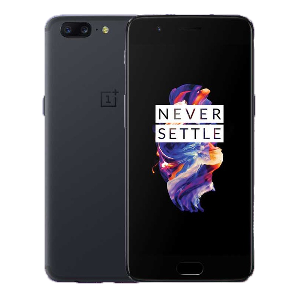

OnePlus
5T 64GB

13900 грн
OnePlus 5T — флагманский смартфон от компании OnePlus, который является модифицированной моделью более старшего OnePlus 5 с усовершенствованным дизайном. При создании смартфона разработчики учли опыты прошлых моделей, а также пожелания клиентов. Отличные технические характеристики и более доступная цена делают OnePlus 5Т достойным конкурентом для таких гигантов, как топовые модели Samsung и Apple.
5 64GB
13000 грн
OnePlus 5 - пятое поколение известного "убийцы флагманов". В модели 2017 года смартфон получил новый внешний вид согласно последних трендов в промышленном дизайне и обновленные компоненты.
В качестве процессора используется один из самых мощных чипов 2017 года - Qualcomm Snapdragon 835, состоящий из 8 вычислительных ядер с максимальной тактовой частотой 2,45 ГГц. Объем оперативной памяти зависит от версии устройства и может составлять 6 или 8 ГБ ОЗУ. Также доступны на выбор конфигурации на 64 или 128 ГБ постоянной памяти.